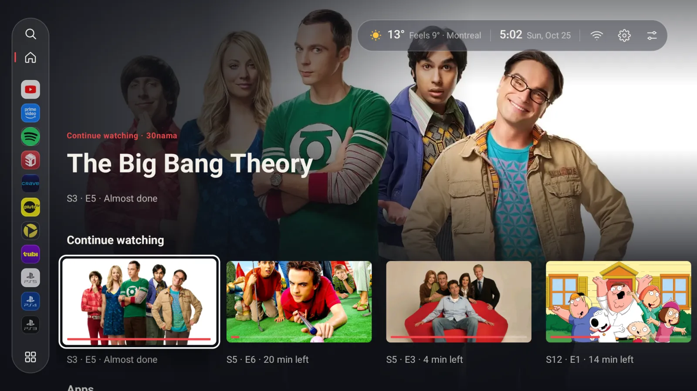
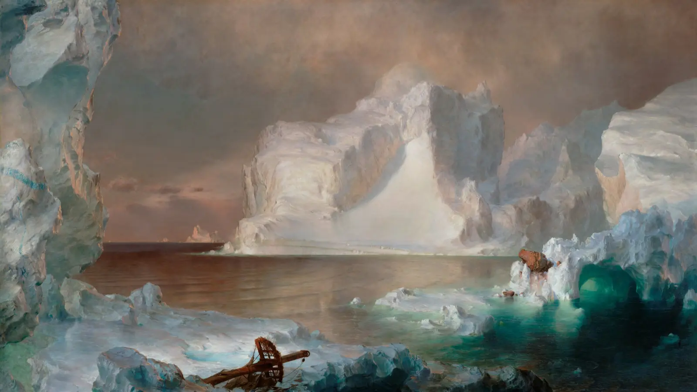
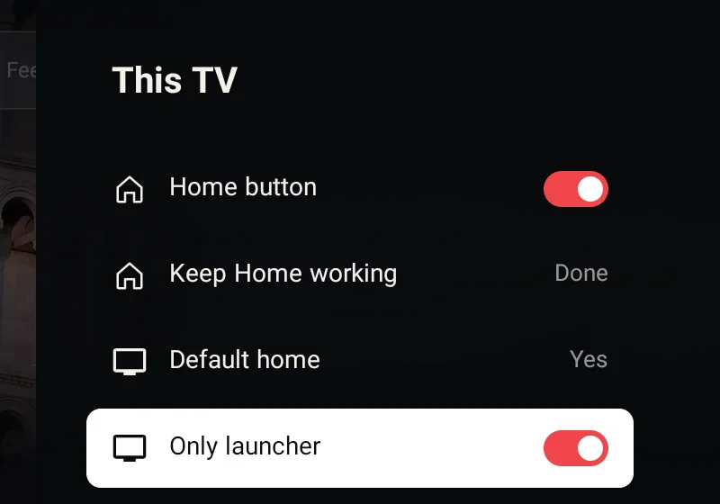
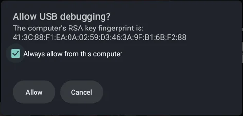

Your TV's home screen, without the ads.
Koolest is a free, open-source launcher for Android TV and Google TV. Your apps, your shows and your consoles, in a glass design made for the remote.
Version 2.1.1, for Android 8.0 and newer. Under 1 MB, no account.
Look around
This is how the home screen works, too: the row along the bottom, and a large picture of whatever you're on.

Continue watching
Use ← → on your keyboard, like the remote.
What it does
Koolest shows what you actually use. There are no sponsored rows, no account and no tracking, and it's a single small app with no third-party libraries.
Continue watching that works
Everything apps report as partway watched, from Android TV's Watch Next list and each app's own channels. Browser tabs stay out.
Rows from your apps
YouTube, 30nama, Spotify and every other app that publishes to the TV's home screen. Empty rows don't show, and any row can be turned off.
Consoles and inputs
Devices that name themselves over HDMI-CEC get a tile with their own logo. Selecting one switches the TV to that input.
A glass design
The menu floats in a frosted capsule, and the clock, weather and buttons share one line at the top. Focused cards grow and lift.
The Home button, kept
On Google TV, Home opens Koolest even where the system launcher can't be replaced. Or make Koolest the only launcher, from the remote.
Weather and a clock
The time and date in the corner, and if you turn it on, the weather with what it feels like and your city.
Wallpapers and a screensaver
Upload a photo from your phone with a QR code, or get a new Unsplash photo on a schedule. The Gallery screensaver shows public-domain paintings.
A PIN for the layout
Lock settings and home screen changes behind a PIN, so small hands can't rearrange everything. Apps still open as usual.
Updates from GitHub
Koolest checks for a new version once a day and installs it when you choose, from Settings, This TV, Updates.
Smooth on TV hardware
Pictures load just ahead of where you're browsing, and the home screen draws as few full-screen layers as it can.

When the TV rests
Choose Gallery in Settings, Screensaver, and the TV shows 19th-century landscape paintings by Church, Shishkin, Cropsey and Heade. They're in the public domain, and they download only if you pick this screensaver.
Install
Koolest isn't on the Play Store yet, so it's installed as an APK file. It works on Android TV and Google TV with Android 8.0 or newer.
With the Downloader app
Install Downloader by AFTVnews from the Play Store on your TV. Open it and type this address:
koolesttvlauncher.github.io/getChoose Install when it asks. The first time, Android asks you to allow Downloader to install apps.
From a USB drive
Download Koolest.apk on a computer, copy it to a USB drive, and open it on the TV with a file manager.
With adb
If you already use adb with your TV:
adb install Koolest.apkThen open Koolest TV Launcher from your apps. Its settings open on the first launch, ready for setup.
Set up
Everything is in Koolest settings, This TV. Only the first step is required.
-
Turn on the Home button
Choose Home button. In the Accessibility screen that opens, turn on Koolest: Home button. Allow the TV listings permission when asked; the rows need it.
Android shows the same warning for every accessibility service. Koolest's only listens for the Home key and for the system launcher appearing. It can't read the screen.
-
Keep Home working
After a reboot, an update or a console session, Android can stop the Home button service. Keep Home working gives Koolest permission to switch it back on by itself.
-
Make Koolest the only launcher, if you like
Google TV's own home screen always outranks other launchers. Only launcher turns it off, so Home always means Koolest. Switch it off to bring Google TV back. Nothing is uninstalled.
Steps 2 and 3 use the TV's debugging. The first time, Koolest shows how to turn it on: press OK seven times on the Android TV OS build in Settings, About, then turn on USB debugging in Developer options. When the TV asks, tick Always allow and choose Allow. You can turn debugging off again afterwards; the changes stay.


With Only launcher on, holding Home no longer opens the Google TV dashboard, and its quick-settings panel and profiles go with it. Android's full Settings app still works.
Using Koolest
| To | Go to |
|---|---|
| Turn home rows on or off | Settings, Home screen, Rows |
| Pin, remove or reorder apps in the menu | Settings, Home screen, Menu apps |
| Rearrange the Apps row | Hold OK on an app, or Settings, Home screen, Rearrange apps |
| Hide something from Continue watching | Hold OK on its card |
| Choose which apps feed Continue watching | Settings, Continue watching, Apps |
| Sort All apps | Open All apps and pick a sort at the top |
| Change the theme or wallpaper | Settings, Look |
| Lock the layout with a PIN | Settings, This TV, PIN lock |
| Get back to the start of the home screen | Press Back: first to the row's first item, then to the menu, then to the top |
Help
Something not working? These cover most of it. If not, open an issue and say which TV you have.
Home opens Google TV after a reboot, an update or a console
Choose Keep Home working in Settings, This TV. Then switch Home button off and on again. On TCL TVs this also allows Koolest past TCL's own auto-start guard.
The Home button setting won't turn on (Android 13 and newer)
Android blocks sideloaded apps from Accessibility at first. Open Android Settings, Apps, Koolest TV Launcher, choose Allow restricted settings from the menu, then try again.
Keep Home working says to turn on debugging
Koolest uses the TV's network debugging on port 5555. Turn on Developer options (press OK seven times on the build number in Settings, About), then USB debugging, and Network debugging if your TV lists it. TVs that only offer Android 11's pairing-code Wireless debugging aren't supported yet; use the adb lines in the README instead.
Rows or Continue watching are empty
Allow the TV listings permission. After that, an app only shows up if it reports to the TV. Google TV's own row also uses your Google account's history, which other apps can't read.
Why only one YouTube account?
YouTube publishes its home-screen rows for the account that's active in the YouTube app only. Switch accounts in YouTube and Koolest's row follows.
How do I use my own wallpaper?
In Settings, Look, open a theme's wallpaper and choose Add from phone. Scan the QR code with your phone, on the same Wi-Fi as the TV, and upload a photo. Or copy files over with adb:
adb push my-wallpaper.jpg /sdcard/Android/data/dev.koolest/files/wallpapers/How do I bring Google TV back?
Switch off Only launcher in Settings, This TV. From a computer, adb shell pm enable com.google.android.apps.tv.launcherx does the same. A factory reset also brings it back.
Privacy
No analytics, no ads, no account.
Koolest only connects to the internet to:
- load artwork for the cards on the home screen
- check GitHub for a new version once a day, and download it when you choose
- download the Gallery paintings, only if you choose that screensaver
- download a photo from Lorem Picsum, only if you choose Unsplash photos
- fetch the weather, only if you turn it on, from ipwho.is and Open-Meteo
Add from phone runs a small upload page on the TV itself, reachable only on your home network and only while that screen is open.